|
R. Elliot English
Ph.D.
Research Scientist eenglish@gmail.com
|
I am currenty CTO at Pilot AI Labs.
I was previously a Postdoctoral scholar at Lawrence Berkeley National Laboratory in Dr. Phillip Colella's Applied Numerial Algorithms Group.
I completed my doctoral work under the supervision of Dr. Ronald Fedkiw. During the course of this work I investigated adaptive methods for solving the incompressible Navier-Stokes equations targeted towards the study of the multi-scale phenomena occurring in turbulent ship wakes. In order to address the issues of efficiency with current adaptive schemes, stemming from both hardware and algorithmic limitations, I worked with Chimera grid embedding techniques which allow single grid solvers to be coupled together by specifying intergrid boundary conditions. In order to solve the fully implicit heat and Poisson equations arising in these formulations when computing viscous and pressure terms, I have developed an efficient grid patching technique that yields a symmetric positive definite system which can be inverted using fast solvers such as conjugate gradient and multigrid.
Previously I developed a method for simulating rigid bodies undergoing collisions and contact that guarantees the bodies do not interpenetrate at any time during the time step. I accomplished this through the use of continuous collision detection and a novel failsafe to guarantee that the bodies do not pass through one another. Prior to this work, I helped develop a model for tangential flow along fluid/solid interfaces in a Cartesian MAC grids. By adding degrees of freedom and coupling a boundary layer of ghost cells we decoupled solid and fluid velocities in tangential directions for non-axis aligned geometry.
In addition, I explored fast multi-level solvers for contact problems as well as applyied numerical physical simulation to applications on mobile devices running platforms such as Google's Android. Most recently this involved working with undergraduate students who, under my direction, ported the PhysBAM physics library to the Android platform and developed both a real time interactive 3D rigid body engine and fully interactive 3D ``Angry Birds'' style game capable of running on both Android phones and tablets.
Curriculum Vitae
Publications
English, R. E., Qiu, L., Yu, Y. and Fedkiw, R., "Chimera Grids for Water Simulation", ACM SIGGRAPH/Eurographics Symposium on Computer Animation (SCA), 85-94 (2013). [video]English, R. E., Qiu, L., Yu, Y. and Fedkiw, R., "An adaptive discretization of incompressible flow using a multitude of moving Cartesian grids", J. Comp. Phys. 254, 107-154 (2013).
English, R. E., Lentine, M. and Fedkiw, R., "Interpenetration Free Simulation of Thin Shell Rigid Bodies", IEEE TVCG 19, 991-1004 (2013).
Robinson-Mosher, A., English, R. E. and Fedkiw, R., "Accurate Tangential Velocities for Solid Fluid Coupling", ACM SIGGRAPH/Eurographics Symposium on Computer Animation (SCA), edited by E. Grinspun and J. Hodgins, 227-236 (2009).
English, R. E., and Bridson, R., Animating developable surfaces using nonconforming elements, Proc. ACM SIGGRAPH 2008.
van den Doel, K., Vogt, F., English, R. E. and Fels, S. S., Towards Articulatory Speech Synthesis with a Dynamic 3D Finite Element Tongue Model. In Proceedings of ISSP 06, pages 59-66, 2006.
Ph.D. Thesis: A Scalable and Adaptive Discretization for Free Surface Incompressible Flow Simulation using Overlapping Cartesian Grids.
B.Sc. Honours Thesis: Animating Developable Surfaces using Nonconforming Elements.
Ph.D. Research
|
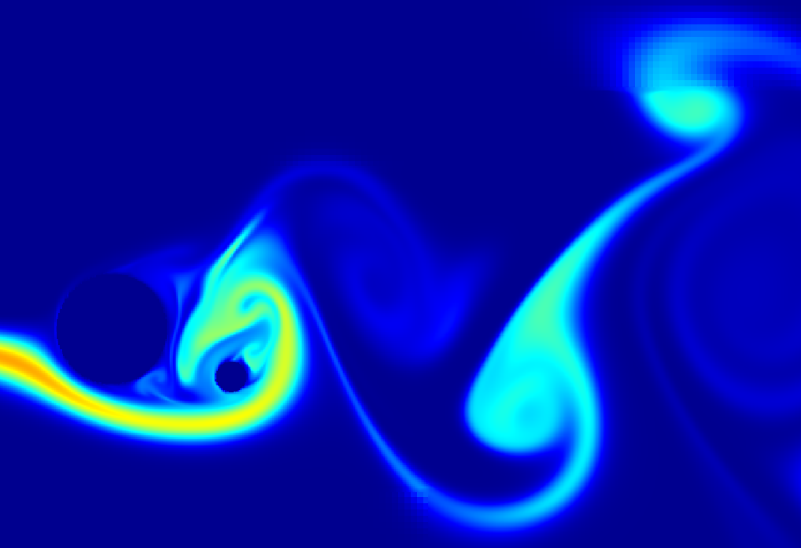 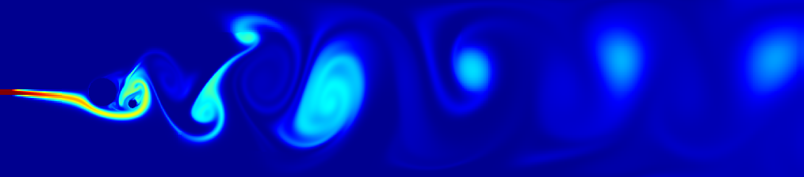 |
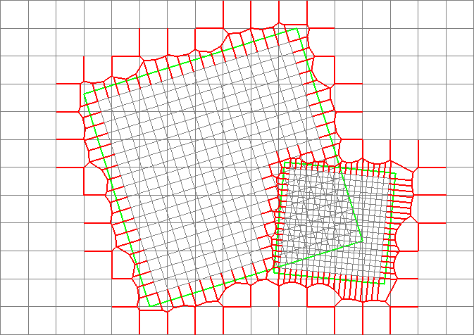 |
{kind=link}
{kind=link}
{kind=link}
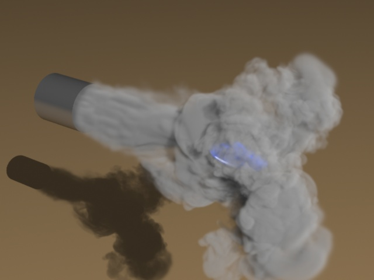

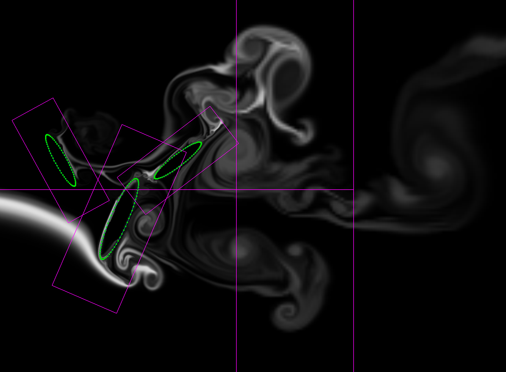 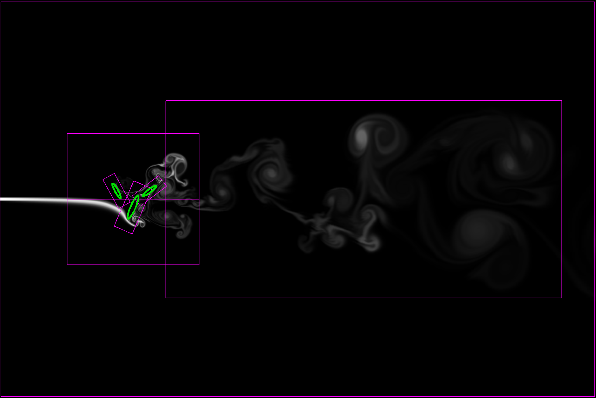
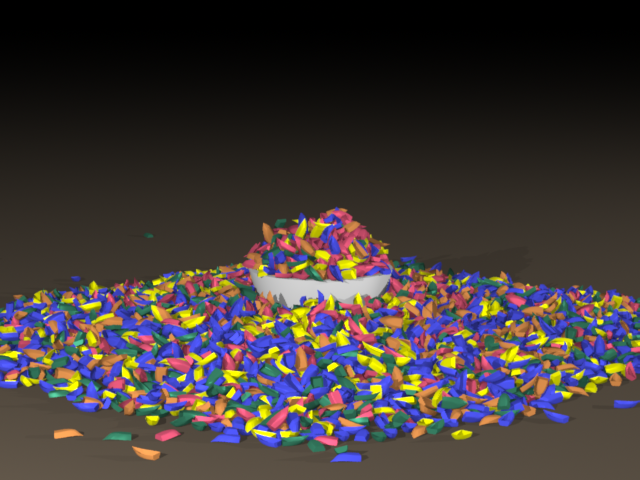 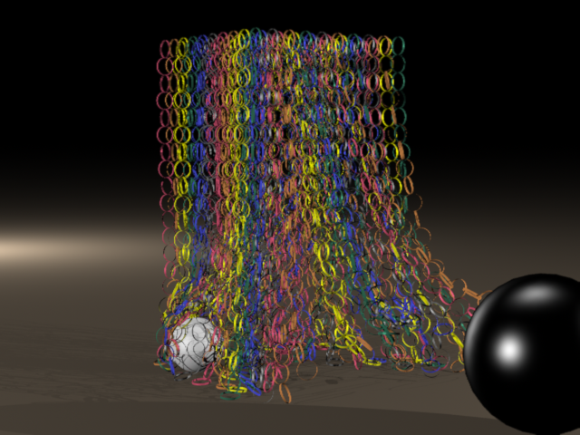
{kind=link}
{kind=link}
Student advising
Summer 2012:Stanford Computer Science Undergraduate Research Internship. 4 undergraduate students from Stanford.
Army High-Performance Computing Research Center Summer Institute. 2 undergraduate students (1 from University of Texas at El Paso, 1 from Stanford University).
China Undergraduate Visiting Researchers. 1 undergraduate student from Tsinghua University, Beijing.
Summer 2011:
Army High-Performance Computing Research Center Summer Institute. 4 undergraduate students (3 from University of Texas at El Paso, 1 from Morgan State University).
 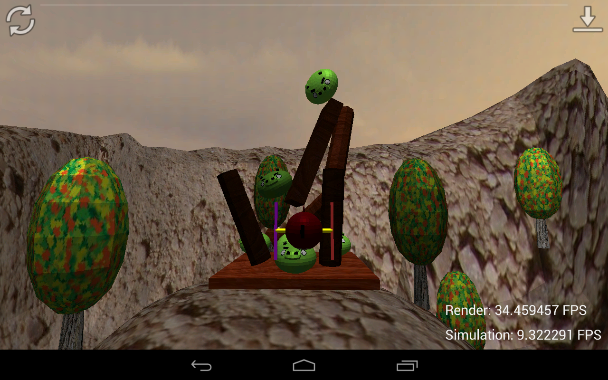
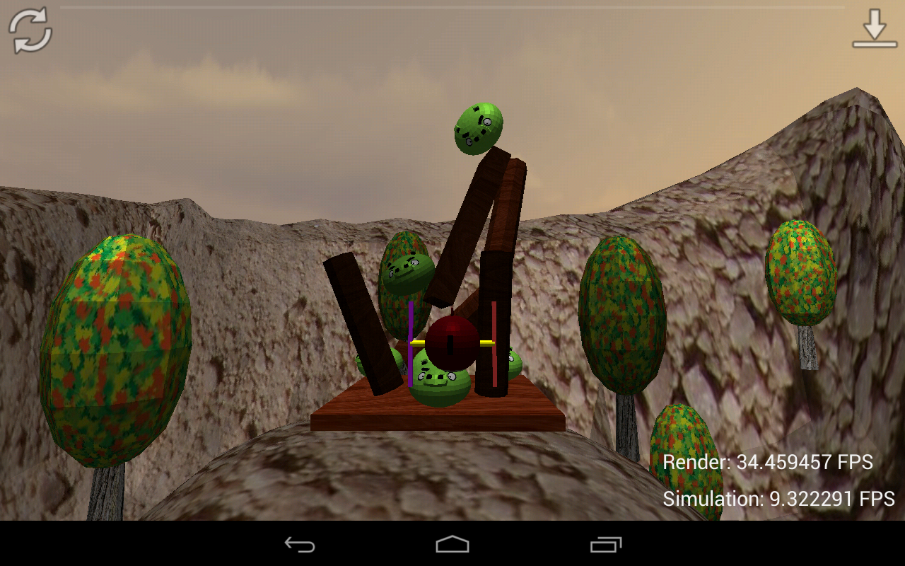
{kind=link}
Teaching
Spring 2010: Teaching assistant, Stanford University. Computer Science 448x, Math and Computer Science behind Special Effects.Fall 2009: Teaching assistant, Stanford University. Computer Science 205a, Mathematical Models for Computer Vision, Robotics, and Graphics.
Summer 2009: Teaching assistant, Stanford University. Computer Science 148, Introduction to Graphics.
Consulting
I provide technical consulting services in a variety of fields. I have extensive experience in legal consulting performing both source code and document review services. Please email me with any inquiries.Links
Applied Numerical Algorithms Group at LBNL
Physbam lab at Stanford
My advisor at Stanford, Ron Fedkiw
My advisor at UBC, Robert Bridson
Artisynth, a 3D biomechanical modeling toolkit for physical simulation of anatomical structures
|
Contact
Email: eenglish@gmail.com |
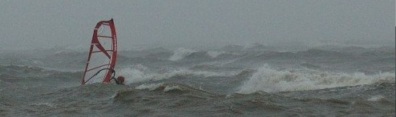 |